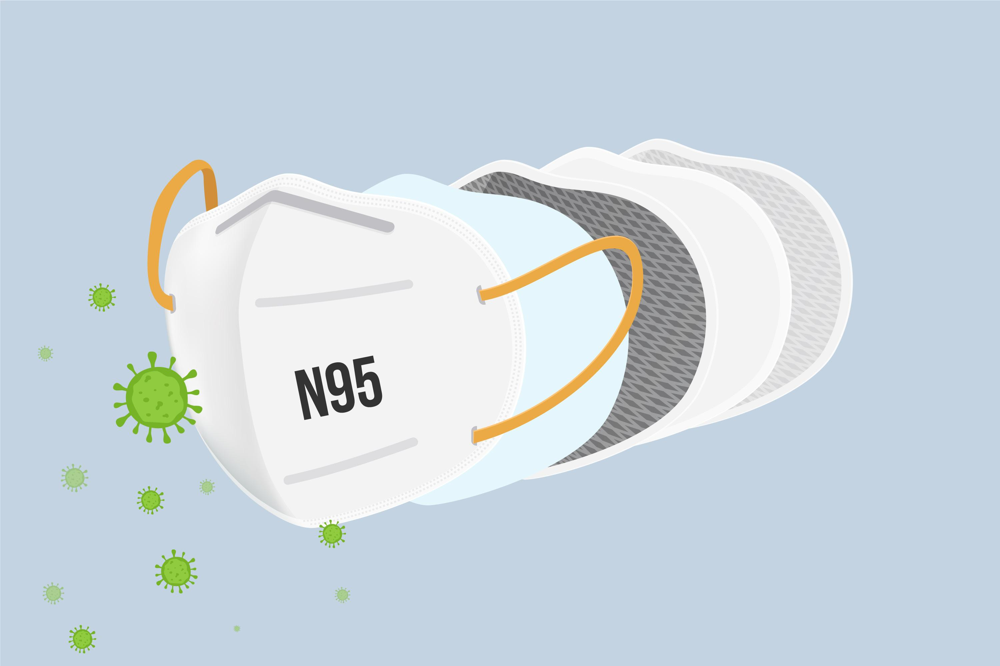
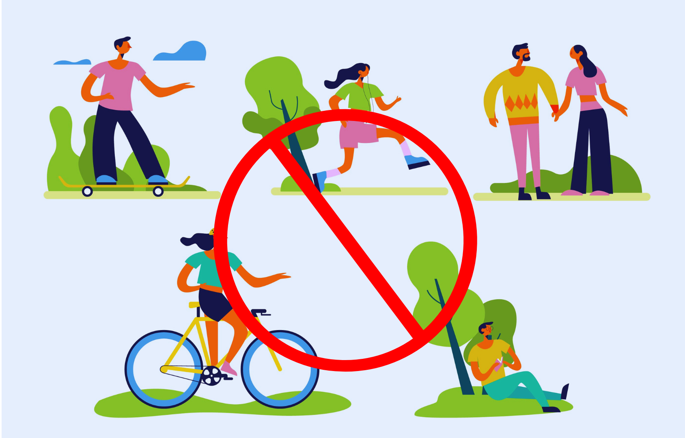
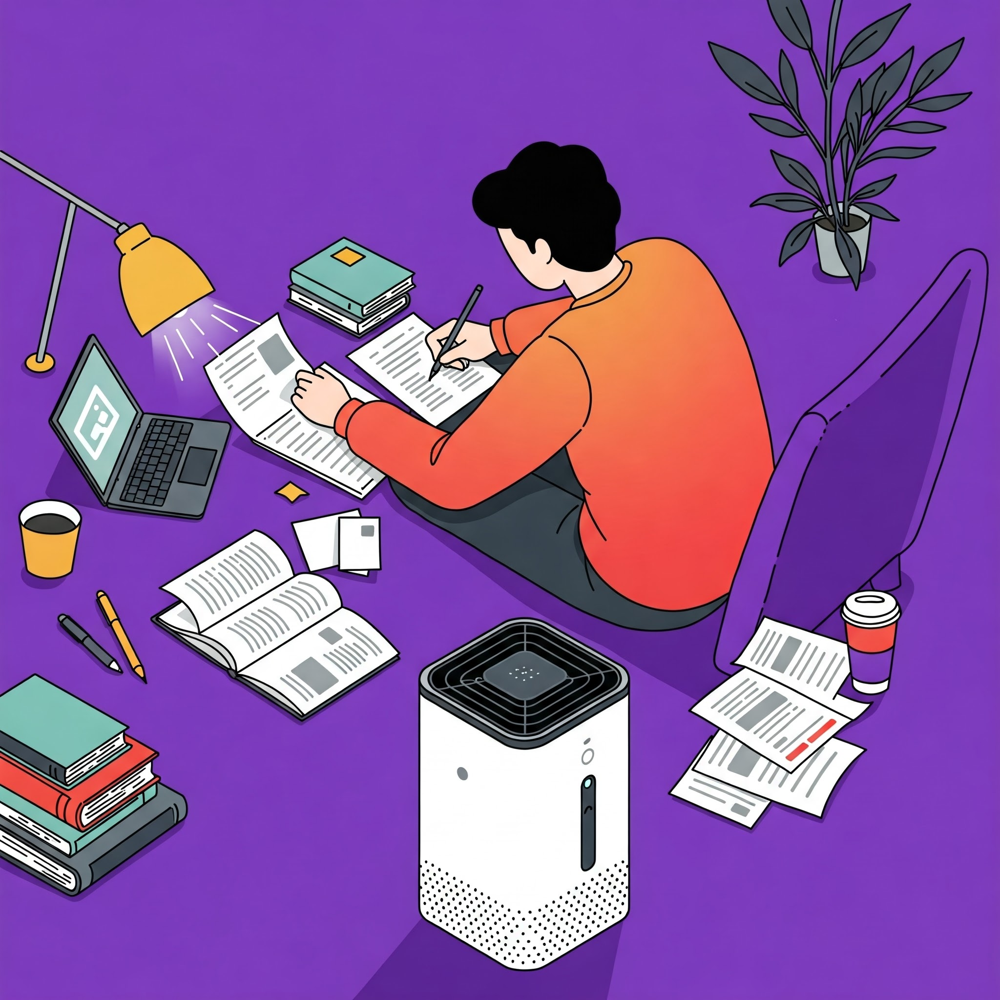
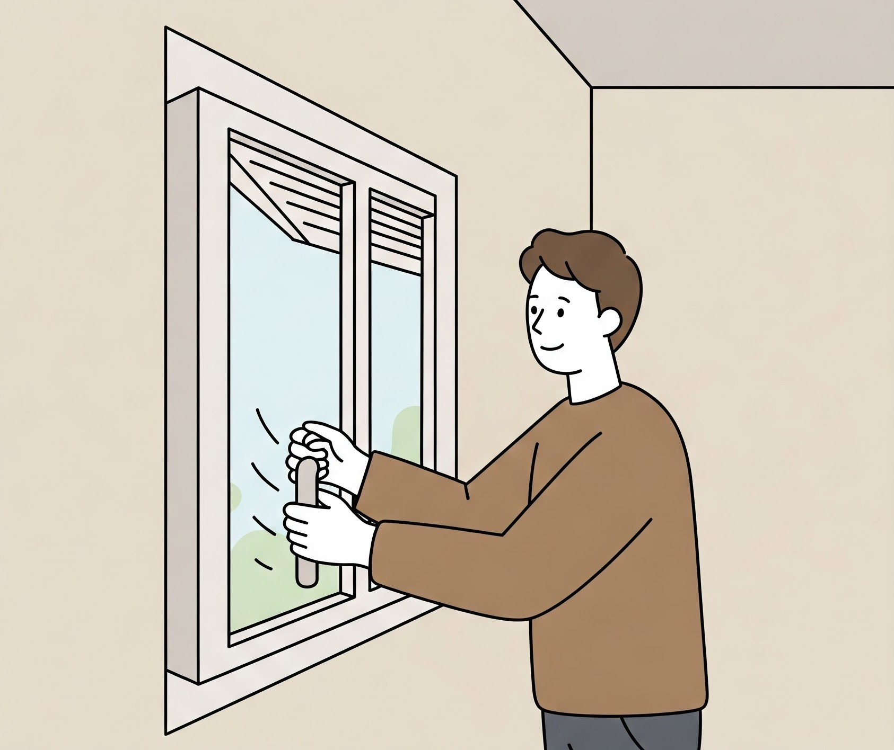

Let’s face it: air pollution is no longer just a problem—it’s a crisis. It’s in the news, on our minds, and unfortunately, in our lungs. In cities like Delhi, where the Air Quality Index (AQI) recently hit a staggering 488—classified as "severe plus"—it feels almost impossible to escape the toxic smog. But while you can’t eliminate pollution overnight, you can protect yourself and your loved ones in practical, easy ways. Here’s how. What Is Air Pollution and What Are Its Effects? Air pollution is more than just an environmental issue—it’s a health crisis with devastating consequences.
It’s not merely about a hazy skyline or the occasional inconvenience of wearing a mask; pollution directly impacts our bodies in ways we’re only beginning to fully understand. Let’s start with the basics. Air pollution is a mix of harmful substances like particulate matter (PM), nitrogen oxides, sulphur dioxide, carbon monoxide, and volatile organic compounds. Among these, PM 2.5 is the most concerning. These microscopic particles are 30 times smaller than the width of a human hair, meaning they can easily penetrate your lungs, enter your bloodstream, and wreak havoc on your body. In India, the problem is especially severe. The air quality in major cities like Delhi often reaches hazardous levels. On November 19, 2024, Delhi’s AQI hit 488, classified as "severe plus," making it the worst in the country. On such days, simply breathing the air is equivalent to smoking dozens of cigarettes, a sobering thought for anyone living in these conditions. But the danger doesn’t stop there. Studies show that India’s current air quality standards are not stringent enough to prevent harm. For instance, a staggering 33,000 deaths occur annually in just 10 Indian cities due to exposure to PM 2.5 at levels still considered "safe" under Indian guidelines. These deaths account for 7.2% of all fatalities in these regions.
The World Health Organization’s (WHO) guidelines for PM 2.5 are far stricter, highlighting the urgent need to reassess what we define as “acceptable” air quality. The impacts of air pollution go beyond the lungs. Research in India has linked long-term exposure to polluted air with a variety of chronic conditions. For instance, air pollution has been shown to exacerbate anaemia by reducing oxygen delivery in the blood. It also takes a toll on mental health, contributing to higher rates of anxiety and depression. Studies even suggest links to neurodegenerative diseases, reduced cognitive function, and developmental delays in children.
Tips to Stay Safe During High Pollution Levels
Air Quality Index (AQI) measures the level of air pollution and its potential health effects. When AQI levels are high, taking preventive measures can help reduce health risks. Here are some key precautions to follow:
Outdoor Precautions
1. Check Air Quality Regularly
Monitor the air quality index (AQI) in your area. Our app give real-time information about the indoor air quality, helping you to plan your day ahead. Strictly refrain from any outdoor activities when the AQI reaches above 300.
2. Wear an N95 or N99 mask
Surgical masks or cloth masks may not be enough to filter out harmful pollutants. Consider investing in an N95 or N99 mask, which is capable of filtering out particulate matter (PM2.5) and other harmful pollutants. Dispose of the mask responsibly after use.
3. Limit Outdoor Activities
During peak pollution times, it’s best to avoid outdoor exercises like running, jogging, or cycling, which will increase the oxygen requirement of the body. Inhaling polluted air can cause irritation in the airways. Try to limit outdoor activities and do mild exercises at home.
4. Opt for Public Transport or Carpooling

Reducing your own contribution to air pollution is equally important. One of the simplest ways is to drive less. Use public transportation, carpool, or, better yet, switch to cycling or walking for short distances. Not only does this cut down on vehicle emissions, but it also helps reduce congestion, another contributor to urban air woes. Plus, it’s lighter on your wallet!
Indoor Precautions
1. Use an air purifier for indoor at office or home
Contrary to popular belief, indoor air isn’t always cleaner than outdoor air. Dust, cooking fumes, and even furniture can contribute to indoor pollution. Investing in a good air purifier, particularly one with a HEPA filter, can significantly improve air quality in your home. Place purifiers in rooms where you spend the most time—like the bedroom or living room. If you can’t afford multiple units, focus on creating a “clean zone” in one part of your house.
2. Boost Your Diet
Consume vitamin C-rich fruits, magnesium-rich meals, and omega-rich foods. By maintaining your immunity, a balanced diet can help you combat the negative consequences of pollution. Vitamins A, C, and E aid in the healing of the body and the prevention of inflammation caused by pollution or other toxins. Nutritionists recommend eating carrots, sweet potatoes, radish, spinach, fenugreek (methi), and pumpkin for Vitamin A, based on the vegetables and fruits available this season. Vitamin C is abundant in lemon, Amla, and oranges, whereas Vitamin E is abundant in rice bran oil and almonds.
3. Use indoor Green plants

indoor green plants like snake plants and peace lilies can slightly improve air quality by absorbing toxins like formaldehyde, their impact is often exaggerated. Research shows you'd need hundreds of plants to match the effectiveness of a single air purifier. However, plants do offer psychological benefits and can complement other air-cleaning methods when used in moderation. For real air quality improvement, focus on proper ventilation, HEPA filters, and reducing pollution sources first.
4. Ventilation
Proper ventilation is crucial for maintaining healthy indoor air quality (AQI) as it helps dilute and remove pollutants like CO₂, VOCs, and particulate matter. Opening windows for 10-15 minutes daily (when outdoor AQI is good) flushes out stale air and brings in fresh oxygen. Use exhaust fans in kitchens/bathrooms to expel moisture and cooking fumes, which can spike PM2.5 levels. For spaces with poor airflow, cross-ventilation (opposite windows) or smart air purifiers with outdoor air filters can balance freshness without compromising filtration.